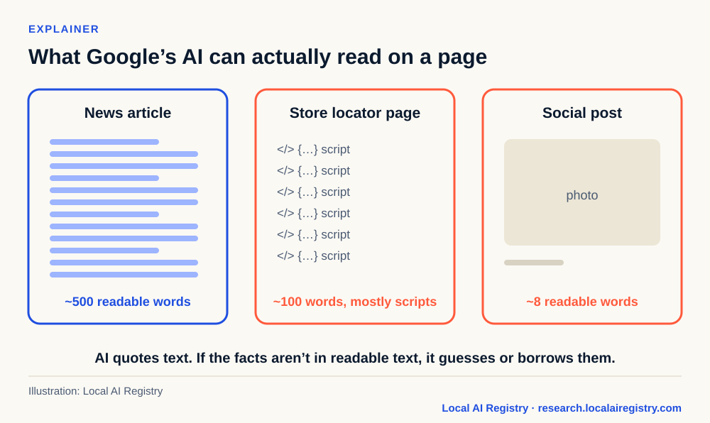
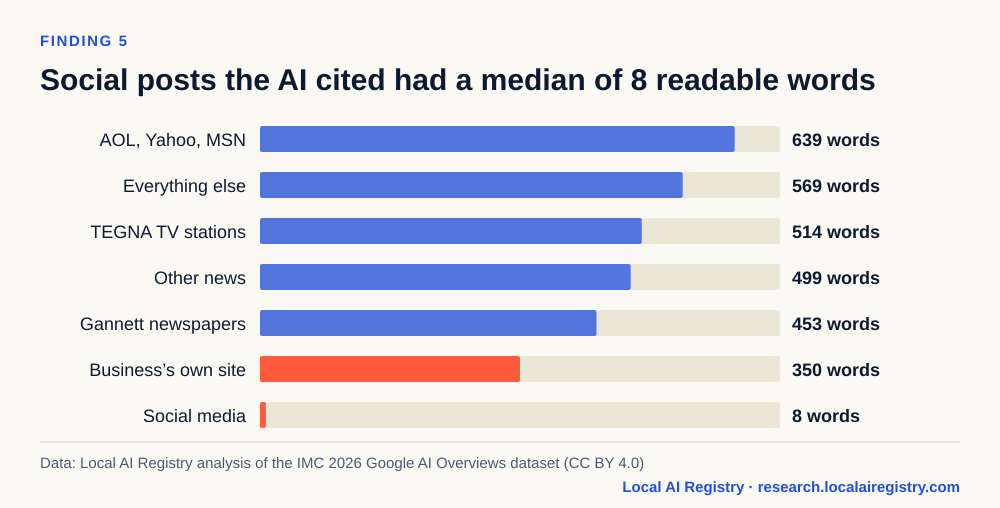
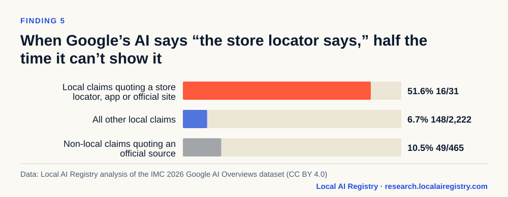

What does my website need so AI can understand it?
What AI needs from your site
Assistants and search crawlers read your site's code, not its design. They need clear facts: who you are, what services you offer, where, when you're open and how to book. Structured data, often called schema markup, states those facts in a standard format so there's nothing to guess.
Businesses' own websites supplied just 6.5% of those citations. The Local Answer Gap, LAIR-R-2026-001
For claims AI attributed to a store locator, app or official site, 51.6% were not supported by any page it cited. The Local Answer Gap, LAIR-R-2026-001
In a census of every venue in two markets, 85.6% were never recommended by any of four assistants. Being named was associated with having a website, more reviews, listed prices and web mentions (Pitenin 2026, preprint, reviewed in our brief). How Often AI Recommends Your Business, LAIR-R-2026-002
What does the research say?
From The Local Answer Gap, our study of how Google's AI answers local business questions. Every number links to its chart.









Want to know what AI says about you right now?
We run your business through ChatGPT, Gemini and Google AI, live, in a free 30‑minute check.
What we do for you
We keep your website accurate and readable for AI: service pages, schema markup, speed and mobile fixes. If a web team or studio already runs your site, we work alongside them instead of replacing them.
- Service and FAQ schema on the pages that matter
- Hours, prices and team kept in step with your verified record
- Speed and mobile fixes, listed in your monthly report
The checklist
- Pages load quickly on a phone.
- Every service has its own page with a plain description.
- LocalBusiness schema with name, address, phone, hours and geo-coordinates.
- Service and FAQ schema where they fit.
- No important text hidden inside images or behind clicks.
- An llms.txt file that points AI to your key pages (optional, low effort).
Free tools to start
Our schema generator builds LocalBusiness markup you can paste into your site, and the llms.txt generator builds the file in a minute.
Cited vs readable: what the AI could actually read
Across: how many answers cited the source. Up: median readable words on its pages. Social posts were cited a lot but had almost nothing to read. Source: The Local Answer Gap, Local AI Registry Research, 2026.
See the data
| Business’s own site | 35.7 | 29.2 |
| Gannett newspapers | 90.3 | 37.8 |
| TEGNA TV stations | 41.5 | 42.8 |
| Other news | 92.3 | 41.6 |
| AOL, Yahoo, MSN | 43 | 53.2 |
| Social media | 48.3 | 0.7 |
| Everything else | 39.1 | 47.4 |
Mistakes we see most
- Hours, prices or staff on the website that don't match the Google profile.
- Key facts locked inside images or PDFs that AI can't read.
- Store locator pages with almost no text. Our research found 51.6% of claims citing a store locator or official site had no supporting page.
What good looks like
- Plain text facts on every service page: what it is, who does it, how long it takes, what it costs where you can say.
- Schema markup that labels those facts for machines.
- One person responsible for keeping the site in step with your verified record.
Which assistants lean on it most
Alexa+ put the most weight on this signal, based on how each one finds local information. Every assistant uses it to some degree.
Industries where it matters most
med spas, plastic surgeons, dermatologists, dentists, eye surgeons, HVAC companies, plumbers, auto dealers, chiropractors, law firms.
Related signals and terms
Check yourself in two minutes
Tick what is true for your business today. The score updates as you go.
0 of 4 done. Start with the first item you couldn't tick.
Frequently asked questions
Does schema guarantee AI will recommend me?
No. Schema makes your facts easy to read. Whether AI recommends you still depends on reviews, mentions and the other signals.
Do I need a new website?
Usually not. Most sites can be fixed. A rebuild makes sense when the platform blocks you from adding schema or fixing speed.
Named in AI in 90 days. Guaranteed.
Book a call and we’ll show you, live, what AI says about you today. If we miss the 90 days, we keep working for free until AI names you.